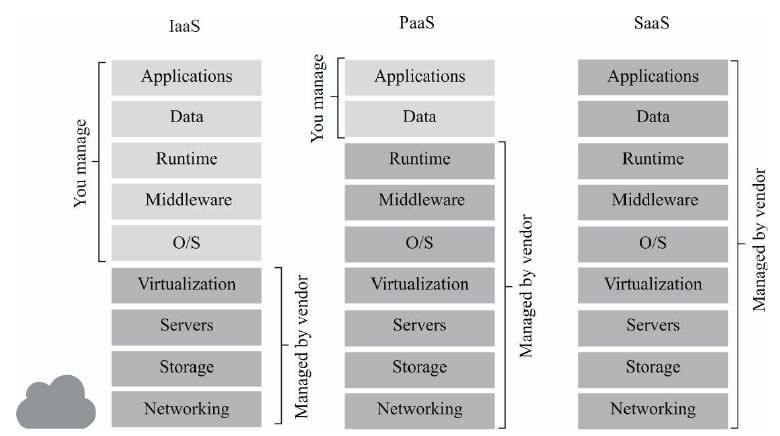
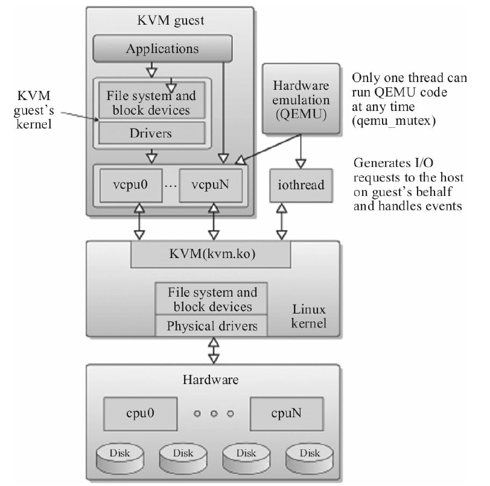
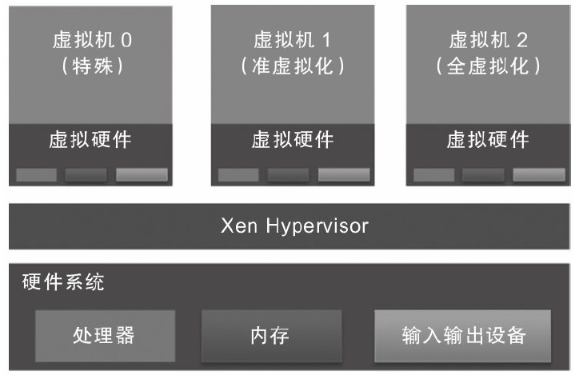
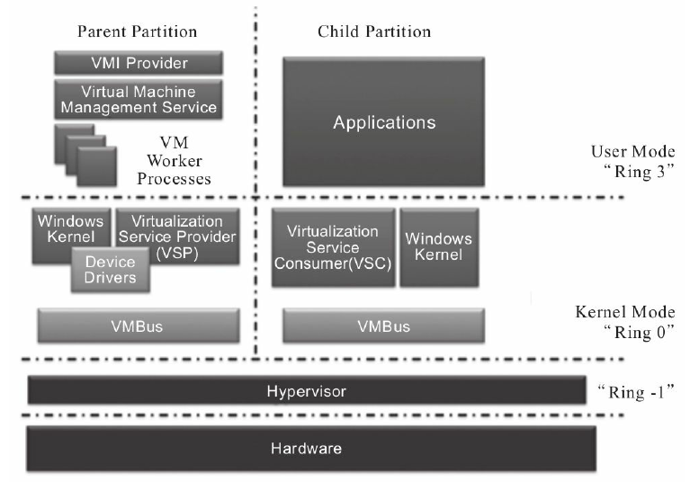
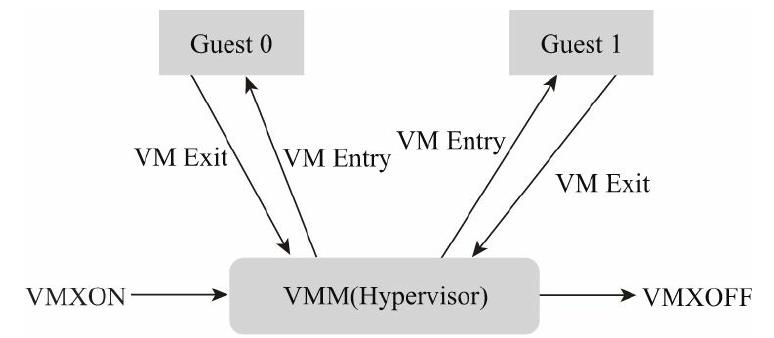
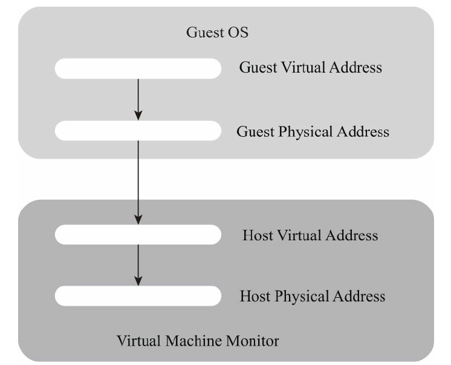
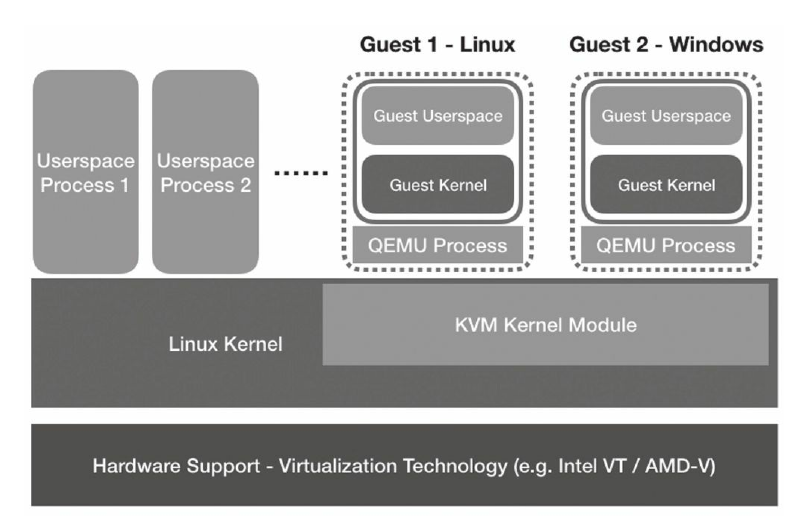

一、前言 kvm和云计算息息相关，同时kvm也是linux上虚拟化技术的内核支持
二、qemu命令说明 1. 快捷键说明 1.1. SDL图形界面下 Ctrl + Alt + f: 全屏显示Ctrl + Alt + 2: 进入qemu监视器窗口2. qemu-img 2.1. 常用选项 -f fmt: 指定img的格式，可选qcow2、vmdk、vdi、vhd、raw等2.2. create 创建镜像文件 1 qemu-img create [-f fmt] [-o options] filename [size]
1 qemu-img --help | grep -i "^Supported formats"
2.3. convert 转换镜像格式 1 qemu-img convert -f vmdk -O qcow2 image.vmdk image.qcow2
2.4. snapshot 快照 1 2 3 4 qemu-img snapshot -c ss1 test.qcow2 # 创建test.qcow2的快照，名字ss1 qemu-img snapshot -l test.qcow2 # 列举test.qcow2的快照 qemu-img snapshot -a ss1 test.qcow2 # 回退到ss1快照 qemu-img snapshot -d ss1 test.qcow2 # 删除ss1快照
2.5. qcow2的镜像如何挂载 1 qemu-nbd --connect=/dev/nbd0 rootfs.qcow2
1 qemu-nbd --disconnect /dev/nbd0
3. qemu-system-[arch] 系统模式启动虚拟机的命令 3.1. 常用选项 1 qemu-system-x86_64 -enable-kvm -m 8G -smp 4 -cpu host,hv_relaxed,hv_spinlocks=0x1fff,hv_vapic,hv_time -net nic -net bridge,br=virbr0 -boot once=d -cdrom ../iso/cn_windows_10_consumer_editions_version_1909_updated_jan_2020_x64_dvd_47161f17.iso win10.qcow2
-enable-kvm: 使用kvm-m 8G: 8G内存-smp 4: 4个逻辑处理器，可以使用-boot once=d: 启动顺序，d代表光盘，once是仅这一次使用光盘-cdrom xxx.iso: 光驱镜像文件3.2. -smp [cpus=]n[,maxcpus=cpus][,cores=cores],[,threads=threads][,sockets=sockets] n: 用于设置逻辑cpu数量，默认为1maxcpus: 用于设置客户机最大可以被使用的cpu数量，可用于热插拔cpucores: 每个cpu核心数，默认为1threads: 每个cpu上线程数，默认为1sockets: 客户机能看到的总的cpu socket数量3.3. -cpu host 设置cpu模拟型号 1 2 # 查看可以模拟的cpu型号 qemu-system-x86_64 -cpu help
-cpu host,hv_relaxed,hv_spinlocks=0x1fff,hv_vapic,hv_time是虚拟windows时可以添加的性能优化选项3.4. -net nic -net bridge,br=virbr0 1) 网桥模式 先参考 brctl网桥管理命令 创建网桥，也可以使用图形界面的网络管理器进行创建，不过NetworkManager创建后需要重启系统才能生效，不知道为什么 -net nic -net bridge,br=virbr0代表虚拟机创建时自动创建虚拟网卡并连接到网桥virbr03.5. -spice port=5900,disable-ticketing=on port=5900: 监听端口5900disable-ticketing=on: 不需要密码addr=0.0.0.0: 监听地址3.6. -append "console=ttyS0,38400" -serial file:output.txt 输出到文件 3.7. -append "console=ttyS0,38400" -serial stdio 输出到控制台 不能加-nographic，会起不来
4. 实战 4.1. 实战使用qemu安装启动aarch64的archlinux 1) 创建虚拟磁盘镜像 1 qemu-img create archlinux-aarch64.img 30G
2) 下载最新archlinux的iso镜像 1 wget https://mirror.tuna.tsinghua.edu.cn/archlinuxarm/os/ArchLinuxARM-aarch64-latest.tar.gz
3) 启动虚拟机 1 2 3 4 5 6 7 8 9 10 11 12 13 14 15 16 17 18 19 qemu-system-aarch64 \ -m 2048 \ -cpu host \ -smp 2 \ -bios QEMU_EFI.fd \ -nographic \ -drive if=none,file=ubuntu-16.04.3-server-arm64.iso,id=cdrom,media=cdrom \ -device virtio-scsi-device \ -device scsi-cd,drive=cdrom \ -drive if=none,file=archlinux-aarch64.img,id=hd0 \ -device virtio-blk-device,drive=hd0 qemu-system-aarch64 \ -M virt \ -cpu cortex-a57 \ -kernel archlinux-aarch64/boot/Image \ -initrd archlinux-aarch64/boot/initramfs-linux.img \ -nographic # -M virt \
(1) 选项解释 -m 2048: 使用2048M的内存-cpu host: 使用宿主机类型的cpu，完全使用宿主机的特性1 2 3 4 5 6 7 8 9 10 11 12 13 14 15 16 17 18 19 20 21 22 23 24 25 26 27 28 29 30 31 32 33 34 35 36 37 38 39 40 41 42 43 # 使用下面命令可以查看支持的cpu类型 => qemu-system-aarch64 -cpu help Available CPUs: a64fx arm1026 arm1136 arm1136-r2 arm1176 arm11mpcore arm926 arm946 cortex-a15 cortex-a53 cortex-a57 cortex-a7 cortex-a72 cortex-a8 cortex-a9 cortex-m0 cortex-m3 cortex-m33 cortex-m4 cortex-m55 cortex-m7 cortex-r5 cortex-r5f host max pxa250 pxa255 pxa260 pxa261 pxa262 pxa270-a0 pxa270-a1 pxa270 pxa270-b0 pxa270-b1 pxa270-c0 pxa270-c5 sa1100 sa1110 ti925t
-smp 2: 设置客户机总共有2个逻辑CPU，并设置了其中CPU socket的数量、每个socket上核心（core）的数量、每个核心上的线程（thread）数量。其中:$$
1 2 3 4 5 6 7 8 => qemu-system-aarch64 -smp help smp-opts options: cores=<num> cpus=<num> dies=<num> maxcpus=<num> sockets=<num> threads=<num>
-hda、-hdb和-cdrom: 设置客户机的 IDE 磁盘和光盘设备。如 -hda centos7.img 将 centos7.img 镜像文件作为客户机的第一个 IDE 磁盘。-drive: 详细的配置一个驱动。1 2 # 使用 virtio_blk 驱动 和 磁盘回写机制 来支持该磁盘文件 -drive file=/images/centos7.img,if=virtio,cache=writeback
-boot: 设置客户机启动的各种选项（包括启动顺序等），如：在安装客户机操作系统时，使用 -boot order=dc -hda centos7.img -cdrom centos7.iso，让 centos.img 文件作为IDE磁盘，安装光盘 centos7.iso 作为 IDE 光驱，并且从光盘启动客户机，从而让客户机进入到系统安装的流程中。1 -boot [order=drives][,once=drives][,menu=on|off]
三、virt-manager 依赖于libvirt，只能管理libvirt注册的主机 1. 网络配置 1.1. 网桥模式 网桥不能使用无线网卡
1 2 3 4 5 6 7 8 9 10 # 创建网桥 => sudo brctl addbr virbr0 # 设置网桥的stp打开 => sudo brctl stp virbr0 on # 设置网桥绑定到一个网卡 => sudo brctl addif virbr0 eno1 # 查看网桥 => sudo brctl show bridge name bridge id STP enabled interfaces virbr0 8000.66c563b8e2bc yes eno1
1) macvtap模式 macvtap可以认为是虚拟出来一个物理网卡，发的包直接通过网桥出去 外部来的流量根据mac地址选择是否给到macvtap还是网桥 macvtap模式无法连接到宿主机，原因是arp请求包通过网桥直接出去，不会进入到网桥，也就不会响应 2) bridge模式 bridge模式是将一个虚拟网卡桥接在网桥上，按照正常的网桥逻辑走 关闭网桥的netfilter，下面命令是临时生效，持久化自己查 1 2 3 => sysctl -w net.bridge.bridge-nf-call-iptables=0 => sysctl -w net.bridge.bridge-nf-call-ip6tables=0 => sysctl -w net.bridge.bridge-nf-call-arptables=0
虚拟机选择网络源为Bridge device...，Device name选上面建立的网桥即可 2. 共享剪贴板和文件 2.1. linux(host) => windows(guest) 剪贴板 文件共享 2.2. linux(host) => linux(guest) 剪贴板: qemu-guest-agent，对应需要启动服务qemu-guest-agent 文件共享: spice-vdagent，对应需要启动服务spice-vdagent 3. 双屏显示 四、qemu管理控制台命令 1. 快照 1 savevm [tag|id] # 保存一个快照
五、virsh 命令 virsh依赖libvirt，管理的是libvirt中注册的虚拟机 1. 虚拟机管理 1.1. 常用命令 1 2 3 4 5 6 7 8 # 列举所有的虚拟机 => virsh list --all Id Name State ------------------------ 13 win10 running - vm1 shut off # 删除一个虚拟机，下面命令只是删除了配置文件，磁盘文件还没有清理 virsh undefine [guest_name]
1.2. 单虚拟机操作 1 2 3 4 5 6 7 8 9 10 11 12 13 # virsh start [guest_name] # 开机 virsh shutdown [guest_name] # 关机 virsh suspend [guest_name] # 挂起 virsh resume [guest_name] # 恢复 virsh destroy [guest_name] # 强制关机 # # 查看硬盘信息 => virsh domblklist win10 Target Source ------------------------------------------------------- sda /path/to/win10-kvm/win10.qcow2
2. 快照管理 参考 什么是虚拟机快照链(snapshot chains)
1 2 3 4 5 6 7 8 9 10 11 12 # 查看快照 virsh snapshot-list [guest_name] # 查看一个快照具体信息 virsh snapshot-info [guest_name] [ss_name] # 保存内置快照，关机就是磁盘快照（较快），开机就是内存快照（较慢） # 配置文件保存在 /var/lib/libvirt/qemu/snapshot/[guest_name]/[ss_name].xml # 内置快照的内容保存在磁盘文件中 virsh snapshot-create-as [guest_name] [ss_name] # 删除快照 virsh snapshot-delete [guest_name] [ss_name] # 恢复快照 virsh snapshot-revert [guest_name] [ss_name]
五、libvirt 1. 配置文件位置 管理的虚拟机配置文件: /etc/libvirt/qemu/ 快照配置文件: /var/lib/libvirt/qemu/snapshot/ 六、读书笔记 1. 《kvm实战：原理、进阶与性能调优》 1.1. 虚拟化简介 1) 云计算概述 云计算分为下面几种服务类型
IaaS（Infrastructure as a Service，基础架构即服务）: 云服务提供一个虚拟硬件环境，用户自己安装操作系统，如虚拟机 PaaS（PlatForm as a Service，平台即服务）: 云服务提供软件运行环境，用户不控制操作系统，只维护程序，如docker SaaS（Software as a Service，软件即服务）: 云服务提供软件，用户直接使用软件，如docs软件 
2) 虚拟化技术 软件虚拟化和硬件虚拟化 软件虚拟化: 纯软件模拟硬件，直接二进制翻译，优势是可以模拟所有平台，缺点是慢 硬件虚拟化: 计算机硬件本身提供能力让客户机执行指令，客户机运行在non-root mode，VMM运行在root mode，性能提升，如intel VT（Intel Virtualization Technology） 半虚拟化和全虚拟化 半虚拟化: 客户机知道自己是虚拟机，某些指令和操作自己处理。简化VMM复杂度和硬件依赖，典型的是virtio，需要两端都装上驱动 全虚拟化: 客户机不知道自己是虚拟机，完全由VMM进行模拟。 intel VT出现前，半虚拟化性能较高，出现后全虚拟化性能直线上升 Type1和Type2虚拟化 Type1: 没有宿主机，虚拟化层直接运行在硬件上，直接控制硬件。如Xen和VMware ESX Type2: 软件形式运行在宿主机上，如VMware Workstation kvm是基于linux内核上，可以说是直接运行在硬件上，但是硬件管理由内核处理，归为Type2 3) KVM简介 
kvm设计初衷就是基于硬件虚拟化技术实现的，所以kvm必须运行在intel VT等类似环境上 4) 其他虚拟化解决方案 Xen 开源 没有宿主机概念，直接运行在硬件上，用户通过0号虚拟机进行管理 
VMware VMware Workstation: Type2虚拟化 VMware ESXi: Type1虚拟化，类似于Xen HyperV 
Container 依托于linux内核的cgroup和namespace等机制 如docker和LXC等，和宿主机公用内核，轻量级，适用于PaaS 1.2. KVM原理简介 1) 硬件虚拟化 cpu虚拟化 intel
intel最早支持硬件cpu虚拟化，也就是intel VT，处理器级别称为VMX（virtual-machine extensions） 有两种VMX模式，根操作（root operation）和非根操作（non-root operation） KVM和宿主机都是运行在根操作下，客户机都是在非根操作下 部分指令会导致从客户机的非根模式到根模式下，即VM Exit；进入非根模式为VM Entry 
逻辑处理器在根模式和非根模式下切换通过一个VMCS（virtual-machine control data structure）的数据结构控制，访问它需要用指针 VMCS指针指向一个VMCS结构的64位指针，使用VMPTRST和VMPTRLD指令对VMCS指针进行读写，使用MREAD、VMWRITE和VMCLEAR等指令进行设置 一个逻辑处理器可以维护多个VMCS结构，但某个时刻只有一个生效，使用VMPTRLD让某个指针生效 可能会导致VM Exit的事件：一些异常、三次故障（Triple fault），外部终端，不可屏蔽中断（NMI）、INIT信号、系统管理终端（SMI）等 VM Exit的代价比较高，可能会消耗成千上百个CPU执行周期，所以是性能分析和调优的关键点 内存虚拟化 客户机虚拟地址，GVA（Guest Virtual Address） 客户机物理地址，GPA（Guest Physical Address） 宿主机虚拟地址，HVA（Host Virtual Address） 宿主机物理地址，HPA（Host Physical Address） 
程序从虚拟地址到物理地址的转换需要使用CR3寄存器，但是在虚拟环境下只能转化成虚拟主机的物理地址，并非HPA，所以需要一个影子页表将GPA转化成HPA 软件实现影子页表开销较大，而intel的cpu在设计上引入了EPT（Extended Page Table，扩展页表） EPT只有在非根模式下才会参与内存地址转换 在非根模式下，cpu找CR3执行INVLPG指令不会导致VM Exit，并且客户机上页表结构故障也不会导致VM Exit VPID
由于EPT扩展页表让不同虚拟机中的映射是不一样的，如果切换了运行环境，TLB也是不一样的，所以虚拟机切换都需要刷新TLB，让TLB重新进行缓存，这样效率比较低 intel在内存虚拟化引入了VPID（Virtual-processor identifier），用于在硬件级对TLB进行优化 虚拟机执行控制器的enable VPID比特位被置为1时，当前的VPID的值是VMCS中的VPID执行控制域的值，cpu找TLB就会查找对应VPID的TLB I/O虚拟化 常见的虚拟化方式有下面四种
设备模拟：在VMM中模拟传统IO设备，客户机执行对应的IO请求由VMM进行捕获执行并返回 前后端驱动接口：在VMM和客户机之间定义一套交互接口，如virtio 设备直接分配：将一个物理设备直接分给客户机使用，如Intel VT-d（Virtualization Technology For Directed I/O） 设备共享分配：特定物理设备可以支持多个虚拟机接口功能，可以给不同客户机使用，如SR-IOV（Single Root I/O Virtualization and Sharing）规范设备 优缺点
优点 缺点 设备模拟 兼容性好，不需要额外驱动 1. 性能较差 前后端接口 性能有所提升 1. 兼容性差，需要客户机安装驱动 设备直接分配 性能非常好 1. 需要硬件设备支持 设备共享分配 性能非常好 1. 需要设备硬件支持
Intel虚拟化技术发展 VT-x技术：intel处理器的虚拟化支持，包括VMX、EPT、VPID等技术 VT-d技术：Intel的芯片组的虚拟化支持，通过Intel IOMMU实现对设备的直接分配为VMM提供了：I/O设备分配、DMA重定向、终端重定向、中断投递等 VT-c技术：Intel的I/O设备的虚拟化技术，包含虚拟机设备队列（VMDq）最大限度提高I/O吞吐率，虚拟机直接互联（VMDc）大幅提升虚拟化性能 2) KVM架构概述 KVM是基于硬件虚拟化支持的完全虚拟化技术，可以虚拟化几乎所有的操作系统 
3) KVM内核模块 kvm是作为一个模块加载到内核中的，可以使用lsmod查看 硬件无关部分为kvm，和cpu相关的部分如intel的为kvm_intel 加载了kvm模块后，会在启动后执行VMXON将宿主机变成虚拟化模式的根模式，创建/dev/kvm设备文件 然后使用loctl对/dev/kvm进行操作